| ID | v | Category | Dur | RMS | Peak | Target | Backend | Preview | Wave | Size |
|---|---|---|---|---|---|---|---|---|---|---|
| amb_air_sweetener ambience air |
v0 | sfx | 1.55s | -28.0 | -15.0 | -28.0 | synth_sfx_extended | 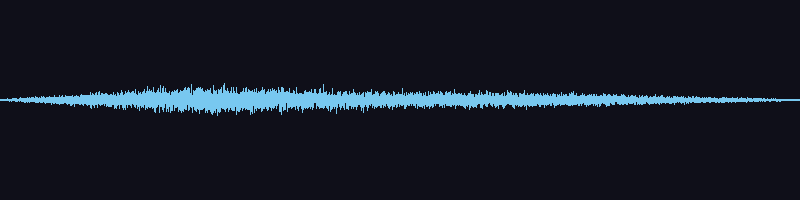 |
133.7 KB | |
| amb_air_sweetener ambience air |
v1 | sfx | 1.55s | -28.0 | -14.8 | -28.0 | synth_sfx_extended | 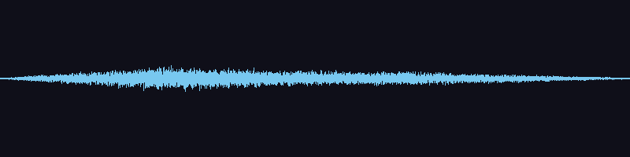 |
133.9 KB | |
| amb_distant_boom ambience distant boom |
v0 | sfx | 2.00s | -22.0 | -8.2 | -22.0 | synth_sfx_extended | 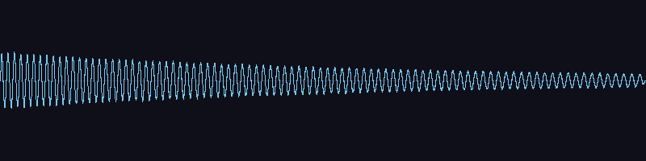 |
172.3 KB | |
| amb_distant_boom ambience distant boom |
v1 | sfx | 2.00s | -22.0 | -8.3 | -22.0 | synth_sfx_extended | 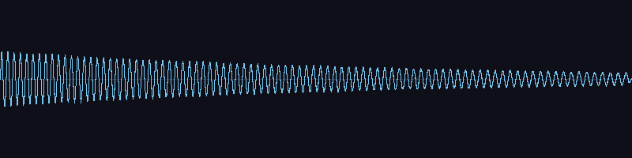 |
172.3 KB | |
| amb_distant_thunder ambience distant thunder |
v0 | sfx | 2.46s | -22.0 | -7.7 | -22.0 | synth_sfx_extended | 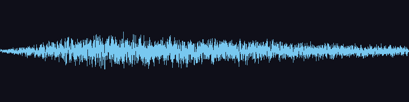 |
212.0 KB | |
| amb_distant_thunder ambience distant thunder |
v1 | sfx | 2.45s | -22.0 | -6.8 | -22.0 | synth_sfx_extended | 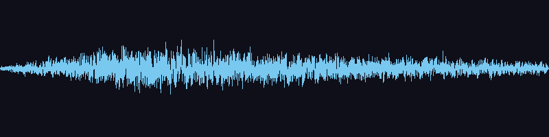 |
210.8 KB | |
| amb_drone_grass ambience drone grassland |
v0 | sfx | 4.00s | -26.0 | -16.9 | -26.0 | synth_sfx_extended | 344.6 KB | ||
| amb_drone_ice ambience drone ice_cavern |
v0 | sfx | 4.00s | -26.0 | -16.7 | -26.0 | synth_sfx_extended | 344.6 KB | ||
| amb_drone_lava ambience drone lava_field |
v0 | sfx | 4.00s | -26.0 | -15.4 | -26.0 | synth_sfx_extended | 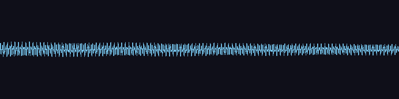 |
344.6 KB | |
| amb_drone_mana ambience drone mana_crystal |
v0 | sfx | 4.00s | -26.0 | -17.6 | -26.0 | synth_sfx_extended | 344.6 KB | ||
| fireball_cast fireball |
v0 | sfx | 0.70s | -16.0 | -6.5 | -16.0 | synth_sfx_extended | 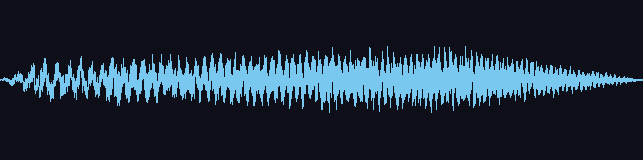 |
60.2 KB | |
| fireball_cast fireball |
v1 | sfx | 0.70s | -16.0 | -6.1 | -16.0 | synth_sfx_extended | 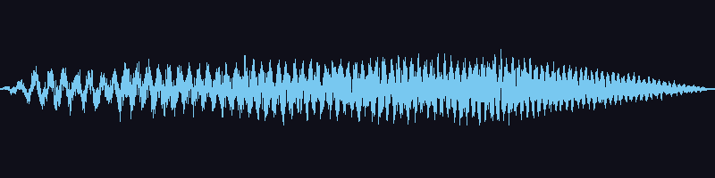 |
60.2 KB | |
| fireball_cast fireball |
v2 | sfx | 0.70s | -16.0 | -6.4 | -16.0 | synth_sfx_extended | 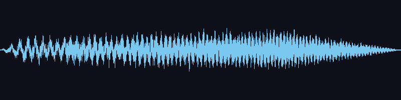 |
60.3 KB | |
| footstep footstep |
v0 | sfx | 0.05s | -16.0 | -3.7 | -16.0 | synth_sfx_extended | 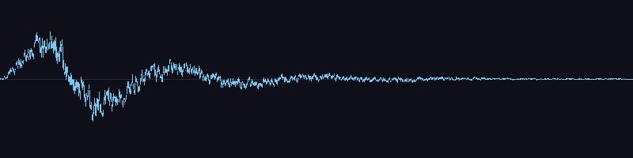 |
4.4 KB | |
| footstep footstep |
v1 | sfx | 0.05s | -16.0 | -2.7 | -16.0 | synth_sfx_extended | 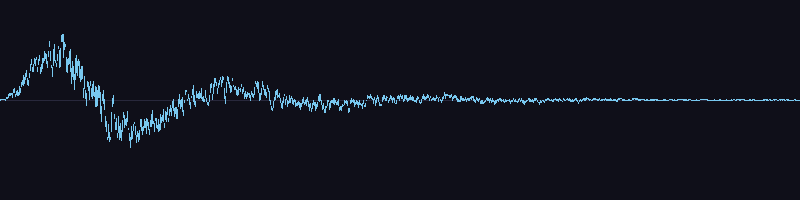 |
4.4 KB | |
| footstep footstep |
v2 | sfx | 0.05s | -16.0 | -1.7 | -16.0 | synth_sfx_extended | 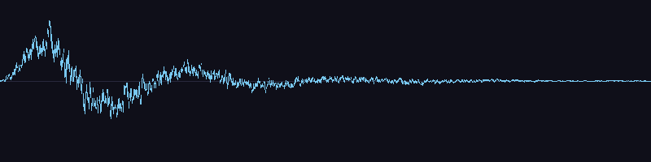 |
4.6 KB | |
| impact_flesh impact hit flesh |
v0 | sfx | 0.20s | -16.0 | -3.7 | -16.0 | synth_sfx_extended | 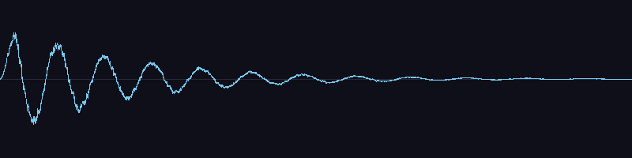 |
17.2 KB | |
| impact_flesh impact hit flesh |
v1 | sfx | 0.20s | -16.0 | -3.8 | -16.0 | synth_sfx_extended | 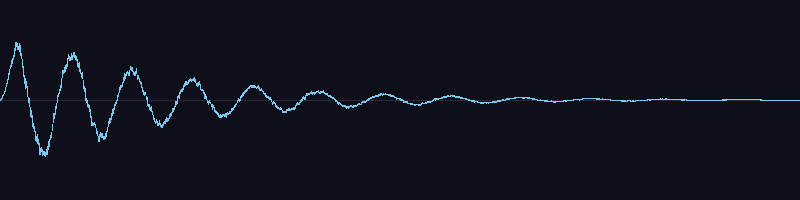 |
17.2 KB | |
| impact_flesh impact hit flesh |
v2 | sfx | 0.20s | -16.0 | -3.8 | -16.0 | synth_sfx_extended | 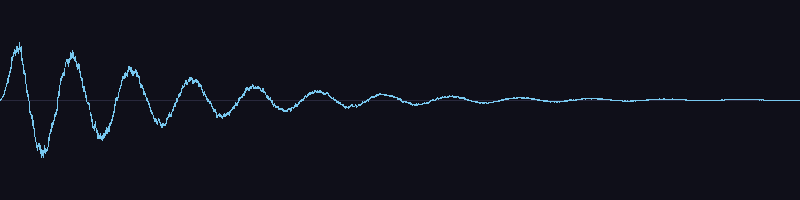 |
17.2 KB | |
| impact_metal impact metal |
v0 | sfx | 0.46s | -18.9 | -1.0 | -16.0 | synth_sfx_extended | 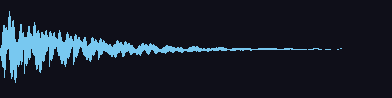 |
39.7 KB | |
| impact_metal impact metal |
v1 | sfx | 0.46s | -18.8 | -1.0 | -16.0 | synth_sfx_extended | 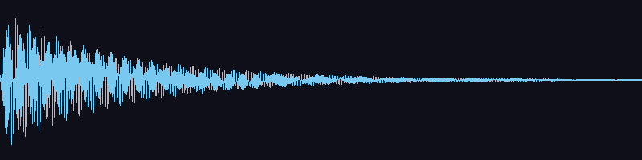 |
39.7 KB | |
| impact_metal impact metal |
v2 | sfx | 0.46s | -18.8 | -1.0 | -16.0 | synth_sfx_extended | 39.7 KB | ||
| impact_shield_block impact shield block |
v0 | sfx | 0.32s | -16.4 | -1.0 | -16.0 | synth_sfx_extended | 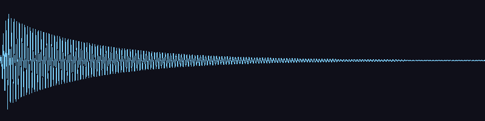 |
27.8 KB | |
| impact_shield_block impact shield block |
v1 | sfx | 0.32s | -16.1 | -1.0 | -16.0 | synth_sfx_extended | 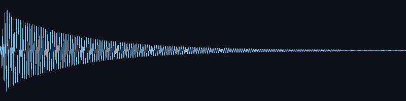 |
27.8 KB | |
| impact_shield_block impact shield block |
v2 | sfx | 0.32s | -16.2 | -1.0 | -16.0 | synth_sfx_extended | 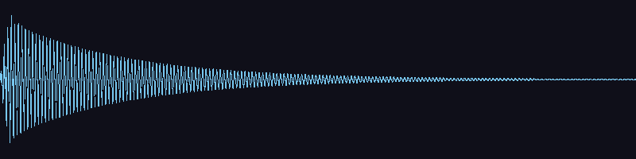 |
27.8 KB | |
| impact_stone impact stone |
v0 | sfx | 0.16s | -16.0 | -1.8 | -16.0 | synth_sfx_extended | 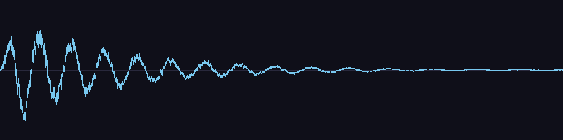 |
13.5 KB | |
| impact_stone impact stone |
v1 | sfx | 0.16s | -16.0 | -2.1 | -16.0 | synth_sfx_extended | 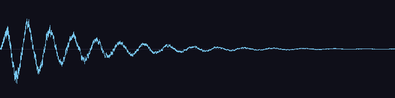 |
13.5 KB | |
| impact_stone impact stone |
v2 | sfx | 0.16s | -16.0 | -2.1 | -16.0 | synth_sfx_extended | 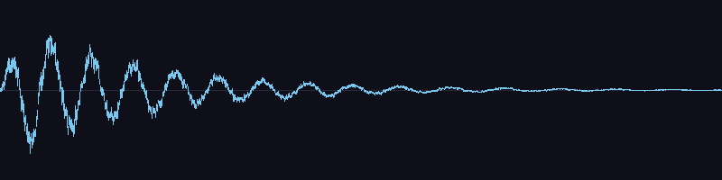 |
13.4 KB | |
| impact_wood impact wood |
v0 | sfx | 0.11s | -16.0 | -2.1 | -16.0 | synth_sfx_extended | 9.3 KB | ||
| impact_wood impact wood |
v1 | sfx | 0.11s | -16.0 | -1.7 | -16.0 | synth_sfx_extended | 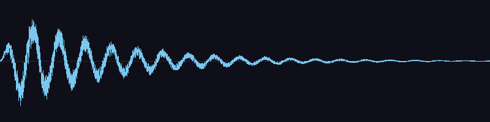 |
9.3 KB | |
| impact_wood impact wood |
v2 | sfx | 0.11s | -16.0 | -2.2 | -16.0 | synth_sfx_extended | 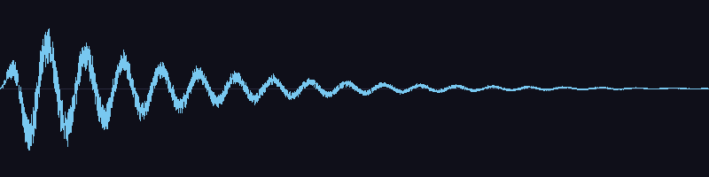 |
9.3 KB | |
| spell_arcane_cast spell arcane cast |
v0 | sfx | 0.70s | -16.0 | -6.7 | -16.0 | synth_sfx_extended | 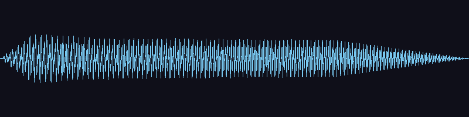 |
60.3 KB | |
| spell_arcane_cast spell arcane cast |
v1 | sfx | 0.70s | -16.0 | -6.6 | -16.0 | synth_sfx_extended | 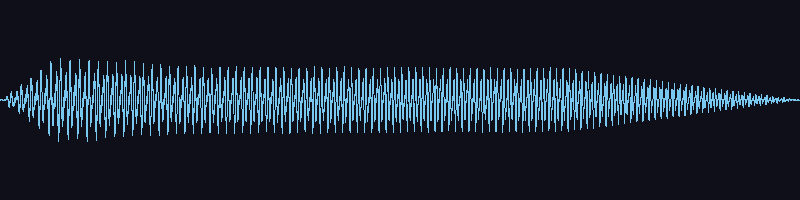 |
60.3 KB | |
| spell_arcane_cast spell arcane cast |
v2 | sfx | 0.70s | -16.0 | -6.3 | -16.0 | synth_sfx_extended | 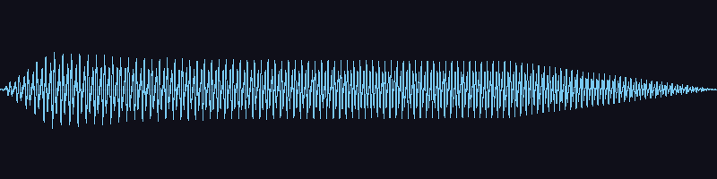 |
60.3 KB | |
| spell_arcane_impact spell arcane impact |
v0 | sfx | 0.55s | -20.3 | -1.0 | -16.0 | synth_sfx_extended | 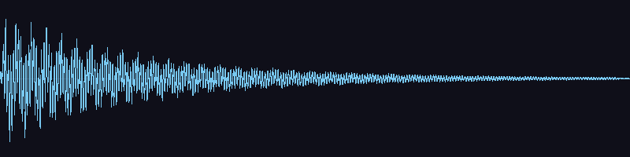 |
47.4 KB | |
| spell_arcane_impact spell arcane impact |
v1 | sfx | 0.55s | -20.5 | -1.0 | -16.0 | synth_sfx_extended | 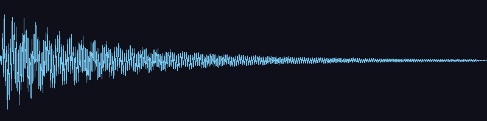 |
47.4 KB | |
| spell_arcane_impact spell arcane impact |
v2 | sfx | 0.55s | -20.5 | -1.0 | -16.0 | synth_sfx_extended | 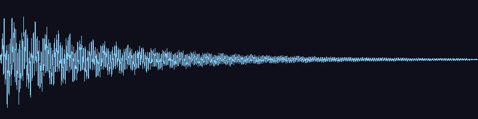 |
47.4 KB | |
| spell_fire_cast spell fire cast |
v0 | sfx | 0.65s | -16.0 | -6.7 | -16.0 | synth_sfx_extended | 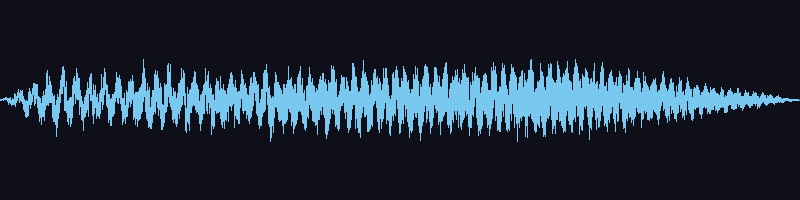 |
56.0 KB | |
| spell_fire_cast spell fire cast |
v1 | sfx | 0.65s | -16.0 | -6.5 | -16.0 | synth_sfx_extended | 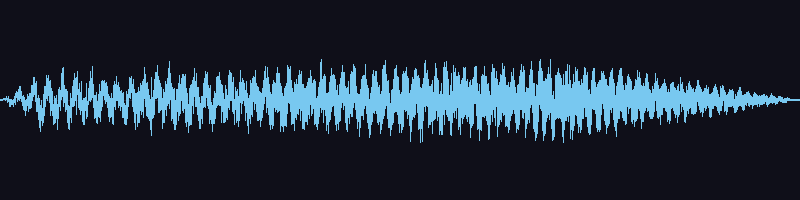 |
55.9 KB | |
| spell_fire_cast spell fire cast |
v2 | sfx | 0.65s | -16.0 | -5.9 | -16.0 | synth_sfx_extended | 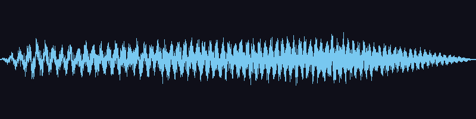 |
55.9 KB | |
| spell_fire_impact spell fire impact |
v0 | sfx | 0.45s | -19.0 | -1.0 | -16.0 | synth_sfx_extended | 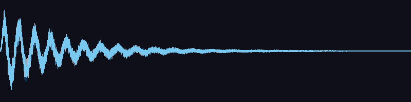 |
38.4 KB | |
| spell_fire_impact spell fire impact |
v1 | sfx | 0.44s | -19.7 | -1.0 | -16.0 | synth_sfx_extended | 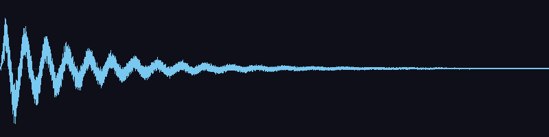 |
38.3 KB | |
| spell_fire_impact spell fire impact |
v2 | sfx | 0.45s | -18.6 | -1.0 | -16.0 | synth_sfx_extended | 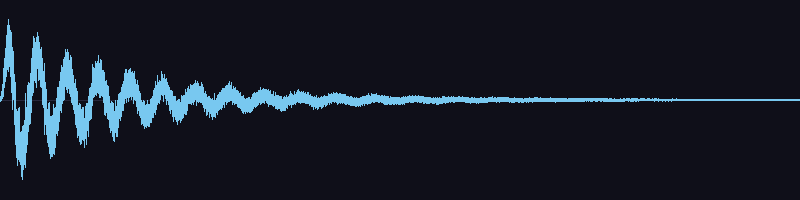 |
38.4 KB | |
| spell_ice_cast spell ice cast |
v0 | sfx | 0.55s | -16.0 | -2.4 | -16.0 | synth_sfx_extended | 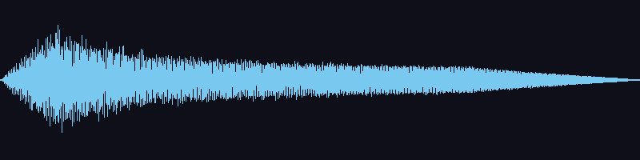 |
47.2 KB | |
| spell_ice_cast spell ice cast |
v1 | sfx | 0.55s | -16.0 | -3.4 | -16.0 | synth_sfx_extended | 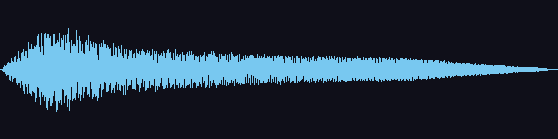 |
47.2 KB | |
| spell_ice_cast spell ice cast |
v2 | sfx | 0.55s | -16.0 | -2.8 | -16.0 | synth_sfx_extended | 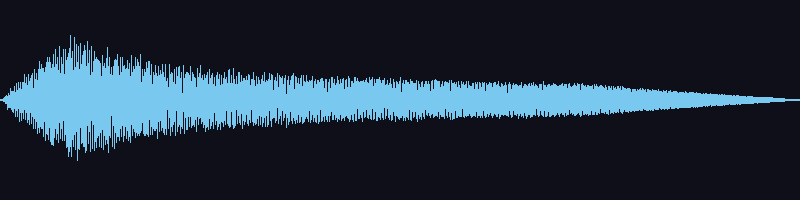 |
47.2 KB | |
| spell_ice_impact spell ice impact |
v0 | sfx | 0.42s | -17.2 | -1.0 | -16.0 | synth_sfx_extended | 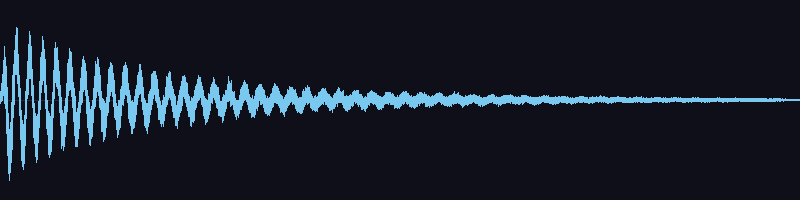 |
36.2 KB | |
| spell_ice_impact spell ice impact |
v1 | sfx | 0.42s | -16.8 | -1.0 | -16.0 | synth_sfx_extended | 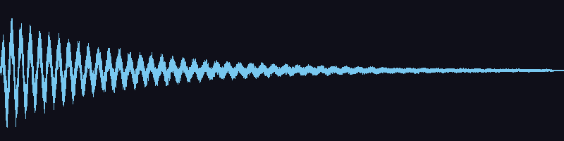 |
36.2 KB | |
| spell_ice_impact spell ice impact |
v2 | sfx | 0.42s | -17.8 | -1.0 | -16.0 | synth_sfx_extended | 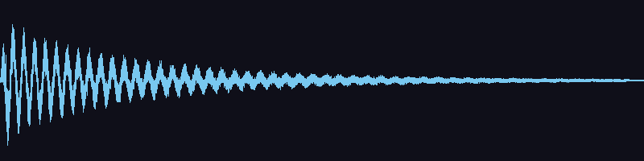 |
36.2 KB | |
| spell_lightning_cast spell lightning cast |
v0 | sfx | 0.45s | -16.0 | -7.9 | -16.0 | synth_sfx_extended | 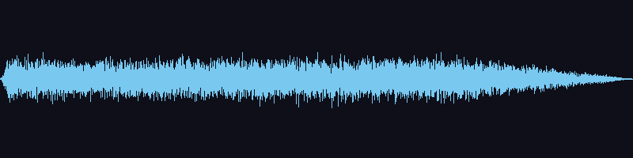 |
38.8 KB | |
| spell_lightning_cast spell lightning cast |
v1 | sfx | 0.45s | -16.0 | -7.1 | -16.0 | synth_sfx_extended | 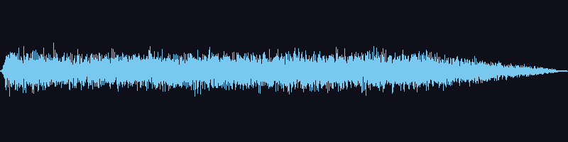 |
38.8 KB | |
| spell_lightning_cast spell lightning cast |
v2 | sfx | 0.45s | -16.0 | -7.2 | -16.0 | synth_sfx_extended | 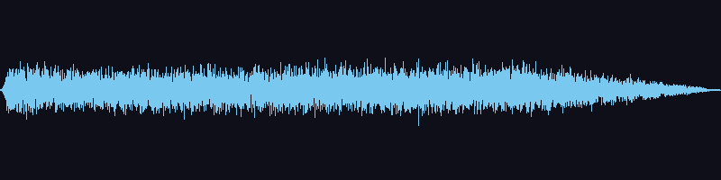 |
38.8 KB | |
| spell_lightning_impact spell lightning impact |
v0 | sfx | 0.50s | -19.5 | -1.0 | -16.0 | synth_sfx_extended | 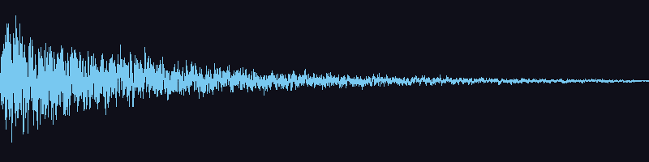 |
43.4 KB | |
| spell_lightning_impact spell lightning impact |
v1 | sfx | 0.49s | -19.1 | -1.0 | -16.0 | synth_sfx_extended | 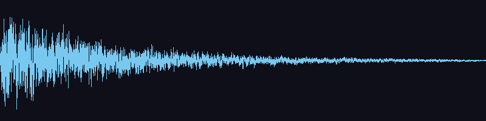 |
42.7 KB | |
| spell_lightning_impact spell lightning impact |
v2 | sfx | 0.50s | -18.9 | -1.0 | -16.0 | synth_sfx_extended | 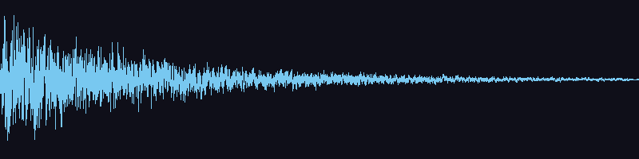 |
43.3 KB | |
| step_grass step grass outdoor |
v0 | sfx | 0.05s | -18.0 | -4.9 | -18.0 | synth_sfx_extended | 4.6 KB | ||
| step_grass step grass outdoor |
v1 | sfx | 0.05s | -18.0 | -4.4 | -18.0 | synth_sfx_extended | 4.7 KB | ||
| step_grass step grass outdoor |
v2 | sfx | 0.05s | -18.0 | -3.7 | -18.0 | synth_sfx_extended | 4.7 KB | ||
| step_grass step grass outdoor |
v3 | sfx | 0.05s | -18.0 | -4.2 | -18.0 | synth_sfx_extended | 4.6 KB | ||
| step_metal step metal |
v0 | sfx | 0.07s | -18.0 | -2.3 | -18.0 | synth_sfx_extended | 5.9 KB | ||
| step_metal step metal |
v1 | sfx | 0.07s | -18.0 | -2.4 | -18.0 | synth_sfx_extended | 5.8 KB | ||
| step_metal step metal |
v2 | sfx | 0.07s | -18.0 | -1.9 | -18.0 | synth_sfx_extended | 5.8 KB | ||
| step_metal step metal |
v3 | sfx | 0.07s | -18.0 | -1.7 | -18.0 | synth_sfx_extended | 5.8 KB | ||
| step_snow step snow outdoor |
v0 | sfx | 0.07s | -18.0 | -2.5 | -18.0 | synth_sfx_extended | 6.3 KB | ||
| step_snow step snow outdoor |
v1 | sfx | 0.07s | -18.0 | -2.7 | -18.0 | synth_sfx_extended | 6.4 KB | ||
| step_snow step snow outdoor |
v2 | sfx | 0.07s | -18.0 | -2.6 | -18.0 | synth_sfx_extended | 6.3 KB | ||
| step_snow step snow outdoor |
v3 | sfx | 0.07s | -18.0 | -3.5 | -18.0 | synth_sfx_extended | 6.3 KB | ||
| step_stone step stone indoor |
v0 | sfx | 0.05s | -18.0 | -3.4 | -18.0 | synth_sfx_extended | 4.5 KB | ||
| step_stone step stone indoor |
v1 | sfx | 0.05s | -18.0 | -3.7 | -18.0 | synth_sfx_extended | 4.4 KB | ||
| step_stone step stone indoor |
v2 | sfx | 0.05s | -18.0 | -3.2 | -18.0 | synth_sfx_extended | 4.5 KB | ||
| step_stone step stone indoor |
v3 | sfx | 0.05s | -18.0 | -3.8 | -18.0 | synth_sfx_extended | 4.4 KB | ||
| step_water step water wet |
v0 | sfx | 0.09s | -18.8 | -1.0 | -18.0 | synth_sfx_extended | 8.1 KB | ||
| step_water step water wet |
v1 | sfx | 0.09s | -18.5 | -1.0 | -18.0 | synth_sfx_extended | 8.2 KB | ||
| step_water step water wet |
v2 | sfx | 0.09s | -18.0 | -2.2 | -18.0 | synth_sfx_extended | 7.7 KB | ||
| step_water step water wet |
v3 | sfx | 0.10s | -18.0 | -1.4 | -18.0 | synth_sfx_extended | 8.2 KB | ||
| step_wood step wood indoor |
v0 | sfx | 0.06s | -18.0 | -4.0 | -18.0 | synth_sfx_extended | 4.9 KB | ||
| step_wood step wood indoor |
v1 | sfx | 0.06s | -18.0 | -4.9 | -18.0 | synth_sfx_extended | 5.2 KB | ||
| step_wood step wood indoor |
v2 | sfx | 0.06s | -18.0 | -5.3 | -18.0 | synth_sfx_extended | 4.8 KB | ||
| step_wood step wood indoor |
v3 | sfx | 0.06s | -18.0 | -5.3 | -18.0 | synth_sfx_extended | 4.8 KB | ||
| sword_swing sword |
v0 | sfx | 0.37s | -16.0 | -1.5 | -16.0 | synth_sfx_extended | 31.7 KB | ||
| sword_swing sword |
v1 | sfx | 0.37s | -16.0 | -1.4 | -16.0 | synth_sfx_extended | 31.7 KB | ||
| sword_swing sword |
v2 | sfx | 0.37s | -16.0 | -1.6 | -16.0 | synth_sfx_extended | 31.6 KB | ||
| ui_back ui |
v0 | ui | 0.26s | -22.0 | -14.9 | -22.0 | synth_sfx_extended | 22.4 KB | ||
| ui_back ui |
v1 | ui | 0.26s | -22.0 | -15.0 | -22.0 | synth_sfx_extended | 22.4 KB | ||
| ui_back ui |
v2 | ui | 0.26s | -22.0 | -14.9 | -22.0 | synth_sfx_extended | 22.4 KB | ||
| ui_click ui |
v0 | ui | 0.03s | -22.0 | -10.6 | -22.0 | synth_sfx_extended | 2.2 KB | ||
| ui_click ui |
v1 | ui | 0.03s | -22.0 | -11.4 | -22.0 | synth_sfx_extended | 2.2 KB | ||
| ui_click ui |
v2 | ui | 0.03s | -22.0 | -11.0 | -22.0 | synth_sfx_extended | 2.2 KB | ||
| ui_close_menu ui menu close |
v0 | ui | 0.22s | -22.0 | -13.8 | -22.0 | synth_sfx_extended | 19.0 KB | ||
| ui_close_menu ui menu close |
v1 | ui | 0.22s | -22.0 | -13.9 | -22.0 | synth_sfx_extended | 19.0 KB | ||
| ui_close_menu ui menu close |
v2 | ui | 0.22s | -22.0 | -13.9 | -22.0 | synth_sfx_extended | 19.0 KB | ||
| ui_confirm ui |
v0 | ui | 0.26s | -22.0 | -15.0 | -22.0 | synth_sfx_extended | 22.4 KB | ||
| ui_confirm ui |
v1 | ui | 0.26s | -22.0 | -14.9 | -22.0 | synth_sfx_extended | 22.4 KB | ||
| ui_confirm ui |
v2 | ui | 0.26s | -22.0 | -14.9 | -22.0 | synth_sfx_extended | 22.4 KB | ||
| ui_error ui error negative |
v0 | ui | 0.30s | -22.0 | -15.2 | -22.0 | synth_sfx_extended | 25.9 KB | ||
| ui_error ui error negative |
v1 | ui | 0.30s | -22.0 | -15.2 | -22.0 | synth_sfx_extended | 25.9 KB | ||
| ui_error ui error negative |
v2 | ui | 0.30s | -22.0 | -15.2 | -22.0 | synth_sfx_extended | 25.9 KB | ||
| ui_open_menu ui menu open |
v0 | ui | 0.22s | -22.0 | -12.3 | -22.0 | synth_sfx_extended | 19.0 KB | ||
| ui_open_menu ui menu open |
v1 | ui | 0.22s | -22.0 | -12.7 | -22.0 | synth_sfx_extended | 19.0 KB | ||
| ui_open_menu ui menu open |
v2 | ui | 0.22s | -22.0 | -12.4 | -22.0 | synth_sfx_extended | 19.0 KB | ||
| ui_pickup ui pickup loot |
v0 | ui | 0.22s | -22.0 | -14.9 | -22.0 | synth_sfx_extended | 19.0 KB | ||
| ui_pickup ui pickup loot |
v1 | ui | 0.22s | -22.0 | -14.9 | -22.0 | synth_sfx_extended | 19.0 KB | ||
| ui_pickup ui pickup loot |
v2 | ui | 0.22s | -22.0 | -14.9 | -22.0 | synth_sfx_extended | 19.0 KB | ||
| ui_purchase ui shop purchase |
v0 | ui | 0.39s | -22.0 | -14.8 | -22.0 | synth_sfx_extended | 33.5 KB | ||
| ui_purchase ui shop purchase |
v1 | ui | 0.39s | -22.0 | -14.8 | -22.0 | synth_sfx_extended | 33.5 KB | ||
| ui_purchase ui shop purchase |
v2 | ui | 0.39s | -22.0 | -14.8 | -22.0 | synth_sfx_extended | 33.5 KB | ||
| ui_quest_complete ui quest fanfare |
v0 | ui | 0.72s | -22.0 | -14.2 | -22.0 | synth_sfx_extended | 62.1 KB | ||
| ui_quest_complete ui quest fanfare |
v1 | ui | 0.72s | -22.0 | -14.2 | -22.0 | synth_sfx_extended | 62.1 KB | ||
| ui_quest_complete ui quest fanfare |
v2 | ui | 0.72s | -22.0 | -14.2 | -22.0 | synth_sfx_extended | 62.1 KB | ||
| ui_select ui select |
v0 | ui | 0.04s | -22.0 | -11.0 | -22.0 | synth_sfx_extended | 3.4 KB | ||
| ui_select ui select |
v1 | ui | 0.04s | -22.0 | -11.1 | -22.0 | synth_sfx_extended | 3.3 KB | ||
| ui_select ui select |
v2 | ui | 0.04s | -22.0 | -11.2 | -22.0 | synth_sfx_extended | 3.3 KB |